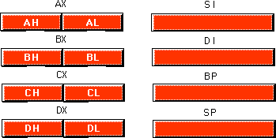
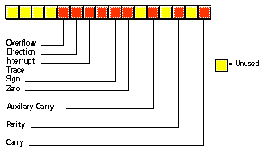
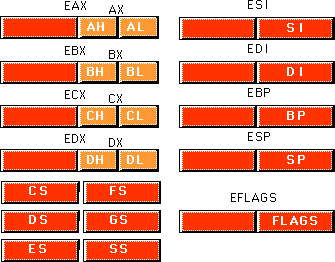
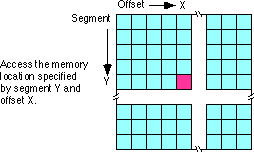
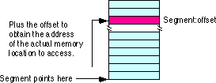
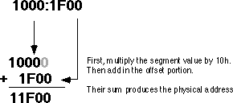
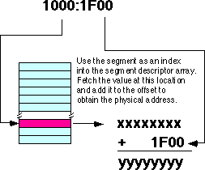

| Table of Content | Chapter Four (Part 2) |
|
| Table of Content | Chapter Four (Part 2) |
|
| CHAPTER
FOUR: MEMORY LAYOUT AND ACCESS (Part 1) |
||
| 4.0 -
Chapter Overview 4.1 - The 80x86 CPUs:A Programmer's View 4.1.1 - 8086 General Purpose Registers 4.1.2 - 8086 Segment Registers 4.1.3 - 8086 Special Purpose Registers 4.1.4 - 80286 Registers 4.1.5 - 80386/80486 Registers 4.2 - 80x86 Physical Memory Organization 4.3 - Segments on the 80x86 4.4 - Normalized Addresses on the 80x86 4.5 - Segment Registers on the 80x86 4.6 - The 80x86 Addressing Modes 4.6.1 - 8086 Register Addressing Modes 4.6.2 - 8086 Memory Addressing Modes 4.6.2.1 - The Displacement Only Addressing Mode 4.6.2.2 - The Register Indirect Addressing Modes 4.6.2.3 - Indexed Addressing Modes 4.6.2.4 - Based Indexed Addressing Modes 4.6.2.5 - Based Indexed Plus Displacement Addressing Mode 4.6.2.6 - MASM Syntax for 8086 Memory Addressing Modes 4.6.2.7 - An Easy Way to Remember the 8086 Memory Addressing Modes 4.6.2.8 - Some Final Comments About 8086 Addressing Modes 4.6.3 - 80386 Register Addressing Modes 4.6.4 - 80386 Memory Addressing Modes 4.6.4.1 - Register Indirect Addressing Modes 4.6.4.2 - 80386 Indexed, Base/Indexed, and Base/Indexed/Disp Addressing Modes 4.6.4.3 - 80386 Scaled Indexed Addressing Modes 4.6.4.4 - Some Final Notes About the 80386 Memory Addressing Modes 4.7 - The 80x86 MOV Instruction 4.8 - Some Final Comments on the MOV Instructions |
Copyright 1996 by Randall Hyde
All rights reserved. Duplication other than for immediate display through a browser is prohibited by U.S. Copyright Law. This material is provided on-line as a beta-test of this text. It is for the personal use of the reader only. If you are interested in using this material as part of a course, please contact rhyde@cs.ucr.edu Supporting software and other materials are available via anonymous ftp from ftp.cs.ucr.edu. See the "/pub/pc/ibmpcdir" directory for details. You may also download the material from "Randall Hyde's Assembly Language Page" at URL: http://webster.ucr.edu Notes: This document does not contain the laboratory exercises, programming assignments, exercises, or chapter summary. These portions were omitted for several reasons: either they wouldn't format properly, they contained hyperlinks that were too much work to resolve, they were under constant revision, or they were not included for security reasons. Such omission should have very little impact on the reader interested in learning this material or evaluating this document. This document was prepared using Harlequin's Web Maker 2.2 and Quadralay's Webworks Publisher. Since HTML does not support the rich formatting options available in Framemaker, this document is only an approximation of the actual chapter from the textbook. If you are absolutely dying to get your hands on a version other than HTML, you might consider having the UCR Printing a Reprographics Department run you off a copy on their Xerox machines. For details, please read the following EMAIL message I received from the Printing and Reprographics Department:
We are currently working on ways to publish this text in a form other than HTML (e.g., Postscript, PDF, Frameviewer, hard copy, etc.). This, however, is a low-priority project. Please do not contact Randall Hyde concerning this effort. When something happens, an announcement will appear on "Randall Hyde's Assembly Language Page." Please visit this WEB site at http://webster.ucr.edu for the latest scoop. Redesigned 10/2000 with "MS FrontPage 98" using
17" monitor 1024x768 |
|
Chapter One discussed the basic format for data in memory. Chapter Three covered how a computer system physically organizes that data. This chapter discusses how the 80x86 CPUs access data in memory.
This chapter forms an important bridge between sections one and two (Machine Organization and Basic Assembly Language, respectively). From the point of view of machine organization, this chapter discusses memory addressing, memory organization, CPU addressing modes, and data representation in memory. From the assembly language programming point of view, this chapter discusses the 80x86 register sets, the 80x86 memory addressing modes, and composite data types. This is a pivotal chapter. If you do not understand the material in this chapter, you will have difficulty understanding the chapters that follow. Therefore, you should study this chapter carefully before proceeding.
This chapter begins by discussing the registers on the 80x86 processors. These processors provide a set of general purpose registers, segment registers, and some special purpose registers. Certain members of the family provide additional registers, although typical application do not use them.
After presenting the registers, this chapter describes memory organization and segmentation on the 80x86. Segmentation is a difficult concept to many beginning 80x86 assembly language programmers. Indeed, this text tends to avoid using segmented addressing throughout the introductory chapters. Nevertheless, segmentation is a powerful concept that you must become comfortable with if you intend to write non-trivial 80x86 programs.
80x86 memory addressing modes are, perhaps, the most important topic in this chapter. Unless you completely master the use of these addressing modes, you will not be able to write reasonable assembly language programs. Do not progress beyond this section of the text until you are comfortable with the 8086 addressing modes. This chapter also discusses the 80386 (and later) extended addressing modes. Knowing these addressing modes is not that important for now, but if you do learn them you can use them to save some time when writing code for 80386 and later processors.
This chapter also introduces a handful of 80x86 instructions. Although the five or so instructions this chapter uses are insufficient for writing real assembly language programs, they do provide a sufficient set of instructions to let you manipulate variables and data structures - the subject of the next chapter.
Now it's time to discuss some real processors: the 8088/8086, 80188/80186, 80286, and 80386/80486/80586/Pentium. Chapter Three dealt with many hardware aspects of a computer system. While these hardware components affect the way you should write software, there is more to a CPU than bus cycles and pipelines. It's time to look at those components of the CPU which are most visible to you, the assembly language programmer.
The most visible component of the CPU is the register set. Like our hypothetical processors, the 80x86 chips have a set of on-board registers. The register set for each processor in the 80x86 family is a superset of those in the preceding CPUs. The best place to start is with the register set for the 8088, 8086, 80188, and 80186 since these four processors have the same registers. In the discussion which follows, the term "8086" will imply any of these four CPUs.
Intel's designers have classified the registers on the 8086 into three categories: general purpose registers, segment registers, and miscellaneous registers. The general purpose registers are those which may appear as operands of the arithmetic, logical, and related instructions. Although these registers are "general purpose", every one has its own special purpose. Intel uses the term "general purpose" loosely. The 8086 uses the segment registers to access blocks of memory called, surprisingly enough, segments. See "Segments on the 80x86" for more details on the exact nature of the segment registers. The final class of 8086 registers are the miscellaneous registers. There are two special registers in this group which we'll discuss shortly.
4.1.1 8086 General Purpose Registers
There are eight 16 bit general purpose registers on the
8086: ax, bx, cx, dx, si,
di, bp, and sp. While you can use many of these
registers interchangeably in a computation, many instructions work more efficiently or
absolutely require a specific register from this group. So much for general purpose.
The ax register (Accumulator) is where
most arithmetic and logical computations take place. Although you can do most arithmetic
and logical operations in other registers, it is often more efficient to use the ax
register for such computations. The bx register (Base) has some special
purposes as well. It is commonly used to hold indirect addresses, much like the bx
register on the x86 processors. The cx register (Count), as its name implies,
counts things. You often use it to count off the number of iterations in a loop or specify
the number of characters in a string. The dx register (Data) has two special
purposes: it holds the overflow from certain arithmetic operations, and it holds I/O
addresses when accessing data on the 80x86 I/O bus.
The si and di registers (Source
Index and Destination Index ) have some special purposes as well. You may use these
registers as pointers (much like the bx register) to indirectly access
memory. You'll also use these registers with the 8086 string instructions when processing
character strings.
The bp register (Base Pointer) is similar to
the bx register. You'll generally use this register to access parameters and
local variables in a procedure.
The sp register (Stack Pointer) has a very
special purpose - it maintains the program stack. Normally, you would not use this
register for arithmetic computations. The proper operation of most programs depends upon
the careful use of this register.
Besides the eight 16 bit registers, the 8086 CPUs also have
eight 8 bit registers. Intel calls these registers al, ah, bl,
bh, cl, ch, dl, and dh.
You've probably noticed a similarity between these names and the names of some 16 bit
registers (ax, bx, cx, and dx, to be
exact). The eight bit registers are not independent. al stands for "ax's
L.O. byte." ah stands for "ax's H.O. byte." The
names of the other eight bit registers mean the same thing with respect to bx,
cx, and dx. The figure below shows the general purpose register
set.

Note that the eight bit registers do not form an
independent register set. Modifying al will change the value of ax;
so will modifying ah. The value of al exactly corresponds to
bits zero through seven of ax. The value of ah corresponds to
bits eight through fifteen of ax. Therefore any modification to al
or ah will modify the value of ax. Likewise, modifying ax
will change both al and ah. Note, however, that changing al
will not affect the value of ah, and vice versa. This statement applies to bx/bl/bh,
cx/cl/ch, and dx/dl/dh as well.
The si, di, bp, and sp
registers are only 16 bits. There is no way to directly access the individual bytes of
these registers as you can the low and high order bytes of ax, bx,
cx, and dx.
The 8086 has four special segment registers: cs,
ds, es, and ss. These stand for Code Segment,
Data Segment, Extra Segment, and Stack Segment, respectively. These registers
are all 16 bits wide. They deal with selecting blocks (segments) of main memory. A segment
register (e.g., cs) points at the beginning of a segment in memory.
Segments of memory on the 8086 can be no larger than 65,536 bytes long. This infamous "64K segment limitation" has disturbed many a programmer. We'll see some problems with this 64K limitation, and some solutions to those problems, later.
The cs register points at the segment
containing the currently executing machine instructions. Note that, despite the 64K
segment limitation, 8086 programs can be longer than 64K. You simply need multiple code
segments in memory. Since you can change the value of the cs register, you
can switch to a new code segment when you want to execute the code located there.
The data segment register, ds, generally
points at global variables for the program. Again, you're limited to 65,536 bytes of data
in the data segment; but you can always change the value of the ds register
to access additional data in other segments.
The extra segment register, es, is exactly
that - an extra segment register. 8086 programs often use this segment register to gain
access to segments when it is difficult or impossible to modify the other segment
registers.
The ss register points at the segment
containing the 8086 stack. The stack is where the 8086 stores important machine
state information, subroutine return addresses, procedure parameters, and local variables.
In general, you do not modify the stack segment register because too many things in the
system depend upon it.
Although it is theoretically possible to store data in the segment registers, this is never a good idea. The segment registers have a very special purpose - pointing at accessible blocks of memory. Any attempt to use the registers for any other purpose may result in considerable grief, especially if you intend to move up to a better CPU like the 80386.
4.1.3 8086 Special Purpose Registers
There are two special purpose registers on the 8086 CPU:
the instruction pointer (ip) and the flags register. You do not access these
registers the same way you access the other 8086 registers. Instead, the CPU generally
manipulates these registers directly.
The ip register is the equivalent of the ip
register on the x86 processors - it contains the address of the currently executing
instruction. This is a 16 bit register which provides a pointer into the current code
segment (16 bits lets you select any one of 65,536 different memory locations). We'll come
back to this register when we discuss the control transfer instructions later.
The flags register is unlike the other registers on the 8086. The other registers hold eight or 16 bit values. The flags register is simply an eclectic collection of one bit values which help determine the current state of the processor. Although the flags register is 16 bits wide, the 8086 uses only nine of those bits. Of these flags, four flags you use all the time: zero, carry, sign, and overflow. These flags are the 8086 condition codes. The flags register appears below:

The 80286 microprocessor adds one major programmer-visible feature to the 8086 - protected mode operation. This text will not cover the 80286 protected mode of operation for a variety of reasons. First, the protected mode of the 80286 was poorly designed. Second, it is of interest only to programmers who are writing their own operating system or low-level systems programs for such operating systems. Even if you are writing software for a protected mode operating system like UNIX or OS/2, you would not use the protected mode features of the 80286. Nonetheless, it's worthwhile to point out the extra registers and status flags present on the 80286 just in case you come across them.
There are three additional bits present in the 80286 flags register. The I/O Privilege Level is a two bit value (bits 12 and 13). It specifies one of four different privilege levels necessary to perform I/O operations. These two bits generally contain 00b when operating in real mode on the 80286 (the 8086 emulation mode). The NT (nested task) flag controls the operation of an interrupt return (IRET) instruction. NT is normally zero for real-mode programs.
Besides the extra bits in the flags register, the 80286
also has five additional registers used by an operating system to support memory
management and multiple processes: the machine status word (msw), the global
descriptor table register (gdtr), the local descriptor table register (ldtr),
the interrupt descriptor table register (idtr) and the task register (tr).
About the only use a typical application program has for the protected mode on the 80286 is to access more than one megabyte of RAM. However, as the 80286 is now virtually obsolete, and there are better ways to access more memory on later processors, programmers rarely use this form of protected mode.
The 80386 processor dramatically extended the 8086 register set. In addition to all the registers on the 80286 (and therefore, the 8086), the 80386 added several new registers and extended the definition of the existing registers. The 80486 did not add any new registers to the 80386's basic register set, but it did define a few bits in some registers left undefined by the 80386.
The most important change, from the programmer's point of
view, to the 80386 was the introduction of a 32 bit register set. The ax, bx,
cx, dx, si, di, bp, sp,
flags, and ip registers were all extended to 32 bits. The 80386 calls these
new 32 bit versions eax, ebx, ecx, edx,
esi, edi, ebp, esp, eflags, and eip
to differentiate them from their 16 bit versions (which are still available on the 80386).
Besides the 32 bit registers, the 80386 also provides two new 16 bit segment registers, fs
and gs, which allow the programmer to concurrently access six different
segments in memory without reloading a segment register. Note that all the segment
registers on the 80386 are 16 bits. The 80386 did not extend the segment registers to 32
bits as it did the other registers.
The 80386 did not make any changes to the bits in the flags register. Instead, it extended the flags register to 32 bits (the "eflags" register) and defined bits 16 and 17. Bit 16 is the debug resume flag (RF) used with the set of 80386 debug registers. Bit 17 is the Virtual 8086 mode flag (VM) which determines whether the processor is operating in virtual-86 mode (which simulates an 8086) or standard protected mode. The 80486 adds a third bit to the eflags register at position 18 - the alignment check flag. Along with control register zero (CR0) on the 80486, this flag forces a trap (program abort) whenever the processor accesses non-aligned data (e.g., a word on an odd address or a double word at an address which is not an even multiple of four).
The 80386 added four control registers: CR0-CR3. These
registers extend the msw register of the 80286 (the 80386 emulates the 80286 msw
register for compatibility, but the information really appears in the CRx registers). On
the 80386 and 80486 these registers control functions such as paged memory management,
cache enable/disable/operation (80486 only), protected mode operation, and more.
The 80386/486 also adds eight debugging registers. A debugging program like Microsoft Codeview or the Turbo Debugger can use these registers to set breakpoints when you are trying to locate errors within a program. While you would not use these registers in an application program, you'll often find that using such a debugger reduces the time it takes to eradicate bugs from your programs. Of course, a debugger which accesses these registers will only function properly on an 80386 or later processor.
Finally, the 80386/486 processors add a set of test registers to the system which test the proper operation of the processor when the system powers up. Most likely, Intel put these registers on the chip to allow testing immediately after manufacture, but system designers can take advantage of these registers to do a power-on test.
For the most part, assembly language programmers need not concern themselves with the extra registers added to the 80386/486/Pentium processors. However, the 32 bit extensions and the extra segment registers are quite useful. To the application programmer, the programming model for the 80386/486/Pentium looks like that shown below:

Chapter Three discussed the basic organization of a Von Neumann Architecture (VNA) computer system. In a typical VNA machine, the CPU connects to memory via the bus. The 80x86 selects some particular memory element using a binary number on the address bus. Another way to view memory is as an array of bytes. A Pascal data structure that roughly corresponds to memory would be:
Memory : array [0..MaxRAM] of byte;
The value on the address bus corresponds to the index supplied to this array. E.g., writing data to memory is equivalent to
Memory [address] := Value_to_Write;
Reading data from memory is equivalent to
Value_Read := Memory [address];
Different 80x86 CPUs have different address busses that control the maximum number of elements in the memory array. However, regardless of the number of address lines on the bus, most computer systems do not have one byte of memory for each addressable location. For example, 80386 processors have 32 address lines allowing up to four gigabytes of memory. Very few 80386 systems actually have four gigabytes. Usually, you'll find one to 256 megabytes in an 80x86 based system.
The first megabyte of memory, from address zero to 0FFFFFh is special on the 80x86. This corresponds to the entire address space of the 8088, 8086, 80186, and 80188 microprocessors. Most DOS programs limit their program and data addresses to locations in this range. Addresses limited to this range are named real addresses after the 80x86 real mode.
You cannot discuss memory addressing on the 80x86 processor family without first discussing segmentation. Among other things, segmentation provides a powerful memory management mechanism. It allows programmers to partition their programs into modules that operate independently of one another. Segments provide a way to easily implement object-oriented programs. Segments allow two processes to easily share data. All in all, segmentation is a really neat feature. On the other hand, if you ask ten programmers what they think of segmentation, at least nine of the ten will claim it's terrible. Why such a response?
Well, it turns out that segmentation provides one other nifty feature: it allows you to extend the addressability of a processor. In the case of the 8086, segmentation let Intel's designers extend the maximum addressable memory from 64K to one megabyte. Gee, that sounds good. Why is everyone complaining? Well, a little history lesson is in order to understand what went wrong.
In 1976, when Intel began designing the 8086 processor, memory was very expensive. Personal computers, such that they were at the time, typically had four thousand bytes of memory. Even when IBM introduced the PC five years later, 64K was still quite a bit of memory, one megabyte was a tremendous amount. Intel's designers felt that 64K memory would remain a large amount throughout the lifetime of the 8086. The only mistake they made was completely underestimating the lifetime of the 8086. They figured it would last about five years, like their earlier 8080 processor. They had plans for lots of other processors at the time, and "86" was not a suffix on the names of any of those. Intel figured they were set. Surely one megabyte would be more than enough to last until they came out with something better.
Unfortunately, Intel didn't count on the IBM PC and the massive amount of software to appear for it. By 1983, it was very clear that Intel could not abandon the 80x86 architecture. They were stuck with it, but by then people were running up against the one megabyte limit of 8086. So Intel gave us the 80286. This processor could address up to 16 megabytes of memory. Surely more than enough. The only problem was that all that wonderful software written for the IBM PC was written in such a way that it couldn't take advantage of any memory beyond one megabyte.
It turns out that the maximum amount of addressable memory is not everyone's main complaint. The real problem is that the 8086 was a 16 bit processor, with 16 bit registers and 16 bit addresses. This limited the processor to addressing 64K chunks of memory. Intel's clever use of segmentation extended this to one megabyte, but addressing more than 64K at one time takes some effort. Addressing more than 256K at one time takes a lot of effort.
Despite what you might have heard, segmentation is not bad. In fact, it is a really great memory management scheme. What is bad is Intel's 1976 implementation of segmentation still in use today. You can't blame Intel for this - they fixed the problem in the 80's with the release of the 80386. The real culprit is MS-DOS that forces programmers to continue to use 1976 style segmentation. Fortunately, newer operating systems such as Linux, UNIX, Windows 9x, Windows NT, and OS/2 don't suffer from the same problems as MS-DOS. Furthermore, users finally seem to be more willing to switch to these newer operating systems so programmers can take advantage of the new features of the 80x86 family.
With the history lesson aside, it's probably a good idea to figure out what segmentation is all about. Consider the current view of memory: it looks like a linear array of bytes. A single index (address) selects some particular byte from that array. Let's call this type of addressing linear or flat addressing. Segmented addressing uses two components to specify a memory location: a segment value and an offset within that segment. Ideally, the segment and offset values are independent of one another. The best way to describe segmented addressing is with a two-dimensional array. The segment provides one of the indices into the array, the offset provides the other:

Now you may be wondering, "Why make this process more complex?" Linear addresses seem to work fine, why bother with this two dimensional addressing scheme? Well, let's consider the way you typically write a program. If you were to write, say, a SIN(X) routine and you needed some temporary variables, you probably would not use global variables. Instead, you would use local variables inside the SIN(X) function. In a broad sense, this is one of the features that segmentation offers - the ability to attach blocks of variables (a segment) to a particular piece of code. You could, for example, have a segment containing local variables for SIN, a segment for SQRT, a segment for DRAWWindow, etc. Since the variables for SIN appear in the segment for SIN, it's less likely your SIN routine will affect the variables belonging to the SQRT routine. Indeed, on the 80286 and later operating in protected mode, the CPU can prevent one routine from accidentally modifying the variables in a different segment.
A full segmented address contains a segment component and an offset component. This text will write segmented addresses as segment:offset. On the 8086 through the 80286, these two values are 16 bit constants. On the 80386 and later, the offset can be a 16 bit constant or a 32 bit constant.
The size of the offset limits the maximum size of a segment. On the 8086 with 16 bit offsets, a segment may be no longer than 64K; it could be smaller (and most segments are), but never larger. The 80386 and later processors allow 32 bit offsets with segments as large as four gigabytes.
The segment portion is 16 bits on all 80x86 processors. This lets a single program have up to 65,536 different segments in the program. Most programs have less than 16 segments (or thereabouts) so this isn't a practical limitation.
Of course, despite the fact that the 80x86 family uses segmented addressing, the actual (physical) memory connected to the CPU is still a linear array of bytes. There is a function that converts the segment value to a physical memory address. The processor then adds the offset to this physical address to obtain the actual address of the data in memory. This text will refer to addresses in your programs as segmented addresses or logical addresses. The actual linear address that appears on the address bus is the physical address :

On the 8086, 8088, 80186, and 80188 (and other processors operating in real mode), the function that maps a segment to a physical address is very simple. The CPU multiplies the segment value by sixteen (10h) and adds the offset portion. For example, consider the segmented address: 1000:1F00. To convert this to a physical address you multiply the segment value (1000h) by sixteen. Multiplying by the radix is very easy. Just append a zero to the end of the number. Appending a zero to 1000h produces 10000h. Add 1F00h to this to obtain 11F00h. So 11F00h is the physical address that corresponds to the segmented address 1000:1F00.

Warning: A very common mistake people make when performing this computation is to forget they are working in hexadecimal, not decimal. It is surprising to see how many people add 9+1 and get 10h rather than the correct answer 0Ah.
Intel, when designing the 80286 and later processors, did not extend the addressing by adding more bits to the segment registers. Instead, they changed the function the CPU uses to convert a logical address to a physical address. If you write code that depends on the "multiply by sixteen and add in the offset" function, your program will only work on an 80x86 processor operating in real mode, and you will be limited to one megabyte of memory.
In the 80286 and later processors, Intel introduced protected mode segments. Among other changes, Intel completely revamped the algorithm for mapping segments to the linear address space. Rather than using a function (such as multiplying the segment value by 10h), the protected mode processors use a look up table to compute the physical address. In protected mode, the 80286 and later processors use the segment value as the index into an array. The contents of the selected array element provide (among other things) the starting address for the segment. The CPU adds this value to the offset to obtain the physical address:

Note that your applications cannot directly modify the segment descriptor table (the lookup table). The protected mode operating system (UNIX, Linux, Windows, OS/2, etc.) handles that operation.
The best programs never assume that a segment is located at a particular spot in memory. You should leave it up to the operating system to place your programs into memory and not generate any segment addresses on your own.
When operating in real mode, an interesting problem develops. You may refer to a single object in memory using several different addresses. Consider the address from the previous examples, 1000:1F00. There are several different memory addresses that refer to the same physical address. For example, 11F0:0, 1100:F00, and even 1080:1700 all correspond to physical address 11F00h. When working with certain data types and especially when comparing pointers, it's convenient if segmented addresses point at different objects in memory when their bit representations are different. Clearly this is not always the case in real mode on an 80x86 processor.
Fortunately, there is an easy way to avoid this problem. If you need to compare two addresses for (in)equality, you can use normalized addresses. Normalized addresses take a special form so they are all unique. That is, unless two normalized segmented values are exactly the same, they do not point at the same object in memory.
There are many different ways (16, in fact) to create normalized addresses. By convention, most programmers (and high level languages) define a normalized address as follows:
Normalized pointers that take this form are very easy to convert to a physical address. All you need to do is append the single hexadecimal digit of the offset to the segment value. The normalized form of 1000:1F00 is 11F0:0. You can obtain the physical address by appending the offset (zero) to the end of 11F0 yielding 11F00.
It is very easy to convert an arbitrary segmented value to a normalized address. First, convert your segmented address to a physical address using the "multiply by 16 and add in the offset" function. Then slap a colon between the last two digits of the five-digit result:
1000:1F00 f 11F00 f 11F0:0
Note that this discussion applies only to 80x86 processors operating in real mode. In protected mode there is no direct correspondence between segmented addresses and physical addresses so this technique does not work. However, this text deals mainly with programs that run in real mode, so normalized pointers appear throughout this text.
When Intel designed the 8086 in 1976, memory was a precious commodity. They designed their instruction set so that each instruction would use as few bytes as possible. This made their programs smaller so computer systems employing Intel processors would use less memory. As such, those computer systems cost less to produce. Of course, the cost of memory has plummeted to the point where this is no longer a concern but it was a concern back then. One thing Intel wanted to avoid was appending a 32 bit address (segment:offset) to the end of instructions that reference memory. They were able to reduce this to 16 bits (offset only) by making certain assumptions about which segments in memory an instruction could access.
The 8086 through 80286 processors have four segment
registers: cs, ds, ss and es. The 80386 and later processors
have these segment registers plus fs and gs. The cs (code
segment) register points at the segment containing the currently executing code. The CPU
always fetches instructions from the address given by cs:ip. By default, the
CPU expects to access most variables in the data segment. Certain variables and other
operations occur in the stack segment. When accessing data in these specific areas, no
segment value is necessary. To access data in one of the extra segments (es, fs, or
gs ), only a single byte is necessary to choose the appropriate segment
register. Only a few control transfer instructions allow you to specify a full 32 bit
segmented address.
Now, this might seem rather limiting. After all, with only four segment registers on the 8086 you can address a maximum of 256 Kilobytes (64K per segment), not the full megabyte promised. However, you can change the segment registers under program control, so it is possible to address any byte by changing the value in a segment register.
Of course, it takes a couple of instructions to change the value of one of the 80x86's segment registers. These instructions consume memory and take time to execute. So saving two bytes per memory access would not pay off if you are accessing data in different segments all the time. Fortunately, most consecutive memory accesses occur in the same segment. Hence, loading segment registers isn't something you do very often.
| Table of Content | Chapter Four (Part 2) |
|
Chapter Four: Memory Layout and
Access (Part 1)
26 SEP 1996